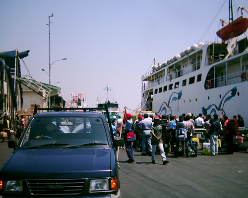
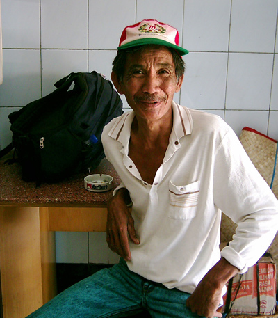
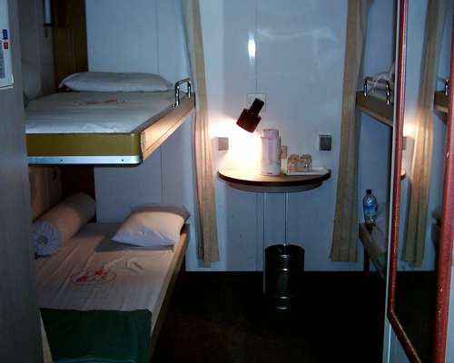

Indonesia Trav-E-Logs©
| Makasar |  |
| back: Flores | The Port in Makasar |
=================================Aug 9 - 11, 2003
 It's time to head back to peninsular Malaysia, and the cheapest way is by taking two Pelni ships. The first leg is from Labuan Bajo on the western tip of Flores to Makasar, Sulawesi, a 25-hour journey. From there you take another Pelni ship that sails through Surabaya to Kijang, Pulau Bintan (a two to three-day journey), an Indonesian island off the coast of Singapore. The Pelni office at Labuan Bajo only sells passage for ships leaving the local port, so the second ticket must be purchased in Makasar. The ship arrived four hours late at Labuan Bajo, and so arrived just as late in Makasar, on a Saturday evening. Hired a becak (three-wheeled bicycle designed to carry one or two passengers) to run me all over town after required negotiations. Banks are closed. Refused a money changer offering a rate 13% lower than official rate. Of course, the Pelni office closed 30 minutes before arrival, and won't open until Monday morning, just a few hours before scheduled departure of the ship towards Singapore. Panic starts to set in, as I don't have enough Indonesian Rupiah to purchase Pelni ticket. Then a helpful Pelni employee leaving the closed office gives me two choices: At the Port on Monday morning, or the after-office-hours location at Hotel Agung. The latter may also change money, so that's the next stop.
My driver (photo) doesn't complain, and I've grown to trust him without constant re-negotiation. We chat; he is 61 and has four children. At the hotel I buy us both sodas, as it's hot and this will take awhile. I insist he sit inside where it is cooler, rather than the customary outside.
Hotel Agung agent accepts Visa for 3%! Solves both problems. Ticket was 25% cheaper, with senior discount. As the becak driver delivers me to the Legend Hostle. He gets double his request. He earned it, I saved on both the exchange rate and the Pelni ticket price. Everyone is happy.
By the way, these becaks are still the most environmentally friendly form of transportation for short trips, though at times slightly more expensive than motorized vehicles. Besides, they are quiet and spew no fumes, and the drivers are generally great conversationalists. In this case, my driver is 10 months younger than me, and still pedaling strong.
As this is my third trip to Makasar, the next day is spent walking around town rather than taking lots of pictures.
Here is a photo of a better second class cabin on a Pelni ship. Unfortunately, this one did not have a port hole, but was cleaner than most. The cabin on the trip to Batam was so isolated that two backpackers from Poland traveling economy class joined me for the two-day trip, without complication. They just discretely went up to the economy class mess hall to pick up meals.
Heavy rain greets our 9 AM arrival in Kijang, Bintan. There we share a taxi to Tanjung Pinang, Indonesia on the other side of the island. At the terminal we discover the next ferry for Johor Bahru, Malaysia leaves at noon, but we must turn in our passports now for exit processing. That gives us just enough time to grab a bite to eat before boarding.
Enjoy!
Bill
------------------------------
Email me at the juno.com address "dancer2SEAsia"
"Travel is Fatal to Bigotry, Prejudice, and Narrow-minded ness" .... attributed to Mark Twain
| next: Tioman Island |
| back: Flores |